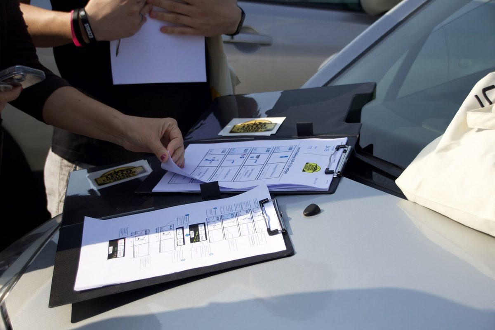
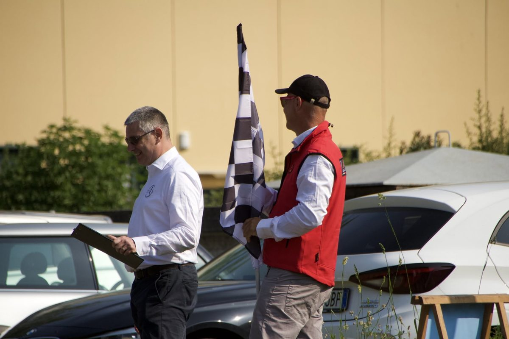
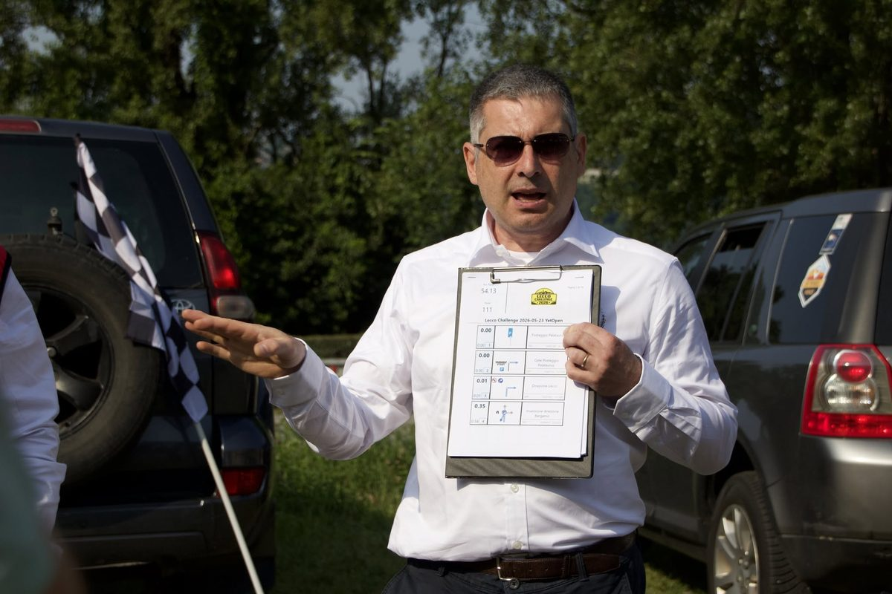

Who we are
RDBK.app is a free suite of digital roadbooks for every adventure — 4×4, moto, bike, running — built around the open .rdbk format. It grows out of years of real rally-navigation tooling.

From Roadbook System to RDBK.app
RDBK.app is the evolution of Roadbook System — the free, open-source rally-navigation suite created by Massimo Sabattini for 4×4 clubs and non-competitive off-road events. Roadbook System paired a roadbook editor, a mobile reader with tripmaster, real-time event ranking and time-locked GPX-trace protection, under one creed: Logica, Semplice, Utile — logic, simple, useful.
RDBK.app carries that spirit onto the modern web. The same core ideas — build a roadbook, follow it with GPS, score an event — rebuilt as a free, installable web app (PWA) plus native iOS and Android apps, around the open .rdbk file format, for any adventure and any device, online or off. The aim is to keep what made Roadbook System loved — clarity, the co-driver's craft, free and open — while bringing it to everyone, everywhere.


The team
Maurizio Andreotti
He shaped RDBK.app's tools — editor, reader, ranking and secure traces — and its design, then pushed the boundaries further: capturing voice notes and geotagged photos while recording a track, OpenRally import & export, the event management, and setting up the online community.
Álvaro Franz
The developer behind RDBK.app — the web suite, the open .rdbk format, the PHP/MariaDB back-end and the native iOS & Android apps. A maker of mobile and remote-coding tools, he brought Roadbook System's ideas to the modern web.
Special thanks
Massimo Sabattini
Off-road navigator and event organiser — he shaped the Roadbook System suite and its creed (Logica, Semplice, Utile), the starting point for RDBK.app.